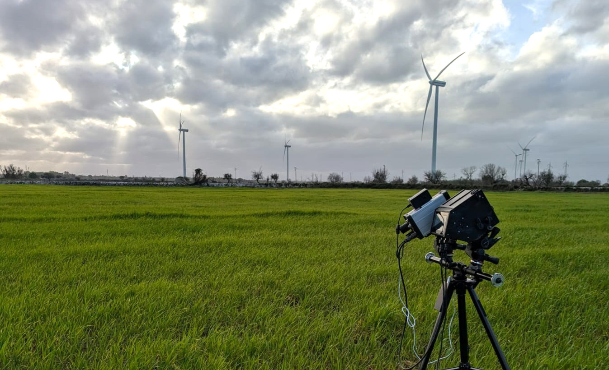
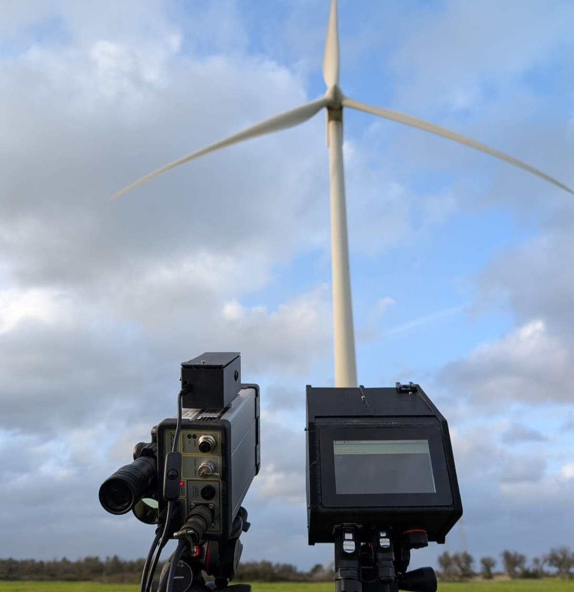
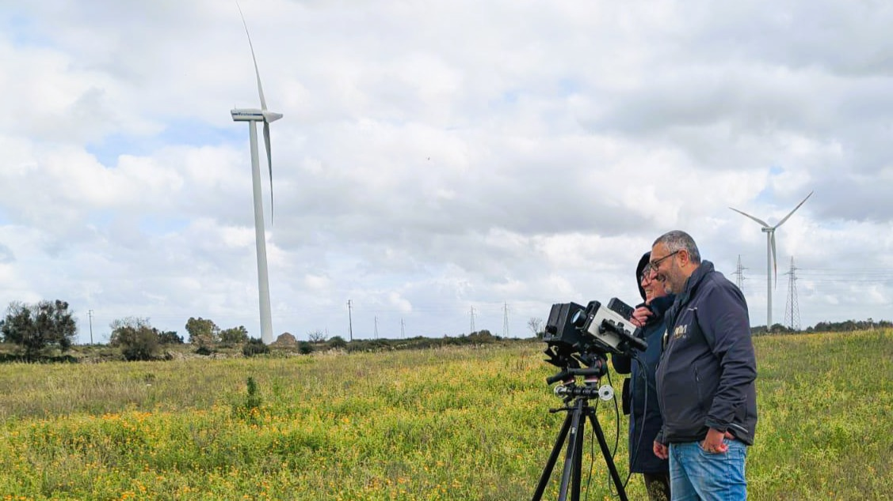

When monitoring detects a problem - who confirms it?
ALIDA brings physical validation into wind turbine operations.
Works on operating turbines - no shutdown required
Detection is not validation
Monitoring platforms detect anomalies.
But they often cannot answer:
Is this real - and what should we do about it?
Decisions are taken with incomplete information.
Unclear root cause
Data shows deviations but no physical confirmation of what's happening at the rotor.
Repeated alarms
Persistent alerts that don't resolve and lack structural explanation.
OEM escalation
Without validated evidence, escalations to OEMs lack the data needed for swift resolution.
Costly inspections
Inspections triggered without structural context waste time and budget on broad, undirected checks.
Today's systems stop at detection
There is no structured way to validate anomalies at component level - especially on rotor and blade systems.
This creates uncertainty, delay, and cost.
Digital Detection
SCADA · CMS · Analytics Platforms
Physical Reality
Rotor · Blades · Structural Behavior

A validation layer for when monitoring is not enough
ALIDA provides a physical validation endpoint for rotor dynamics-integrated into existing workflows, without turbine shutdown.
Capture
- Laser + video sensing
- No turbine shutdown
- No downtime
Measure turbines during normal operation. Deploy in minutes. No permits. No intervention.
Analyze
- Rotor dynamics
- Imbalance detection
- Measured pitch offset
Identify which turbine, and which blades, are off. Quantify imbalance. Prioritize action.
Validate
- Structural confirmation
- Physics-based evidence
Move beyond SCADA assumptions. Confirm whether intervention is justified.
Correct
- Targeted pitch correction
- OEM-ready adjustments
Fix only what needs fixing. Blade-level actions. No blanket interventions.
Verify
- Post-fix measurement
- Residual imbalance quantified
Measure again. Compare before vs after. Prove the intervention worked.
Deployed in the field
Real measurement setup - operating turbine, no shutdown
From signal to decision
Geometry reconstruction and blade-level analysis - from anomaly to structural validation
Why it matters
Without validation
- Reactive maintenance
- Higher costs
- Slow decisions
With ALIDA
- Faster decisions
- Targeted inspections
- Reduced uncertainty

Designed for real-world integration
Deployable on operating turbines, without shutdown, modification, or disruption.
- No turbine downtime
- No structural intervention
- No access constraints
Works as a layer on top of SCADA and analytics platforms.
When ALIDA is used
Unclear SCADA anomaly
When monitoring flags something but the root cause is uncertain.
Repeated alerts without root cause
Persistent alerts that don't resolve and lack structural explanation.
Before OEM escalation
Get physical evidence before escalating to manufacturers.
Before costly inspection campaigns
Validate before committing to expensive, broad inspection programs.
System pipeline
Not another monitoring system
Monitoring detects anomalies.
ALIDA confirms what is actually happening.
A decision validation layer.
Built in industrial context
Developed around real rotor analytics problems.
Explored in OEM-relevant environments (including Vestas-related contexts)
Team
Francesco Paraggio
AI Architect - Industrial Systems
AI Architect working at the intersection of data, physics, and decision-making.
Experience across regulated and industrial environments (EUIPO, Siemens Energy, Sandoz, BNP Paribas).
- Wind analytics, SCADA, predictive maintenance
- System design → from signal to decision
Nico Macrionitis
Embedded Systems - Sensing & Infrastructure
Engineer specialized in embedded systems, Linux, and hardware/software integration.
Focus on reliable data acquisition and edge computing.
- Embedded architectures & real-time systems
- Sensor integration & pipelines
- Open-source and low-level engineering
Fabrizio Sardella
Wind Turbine Engineer - Industrial Validation
30+ years in wind energy, including Technical Director at Vestas Italia.
Expert in turbine mechanics, OEM standards, and field validation.
- Rotor dynamics & structural behavior
- Industrial validation & quality
- OEM interface
AI + Sensing + Engineering
From measurement to decision-ready output.
Ready to validate?
We are currently exploring pilot opportunities with utilities and partners.